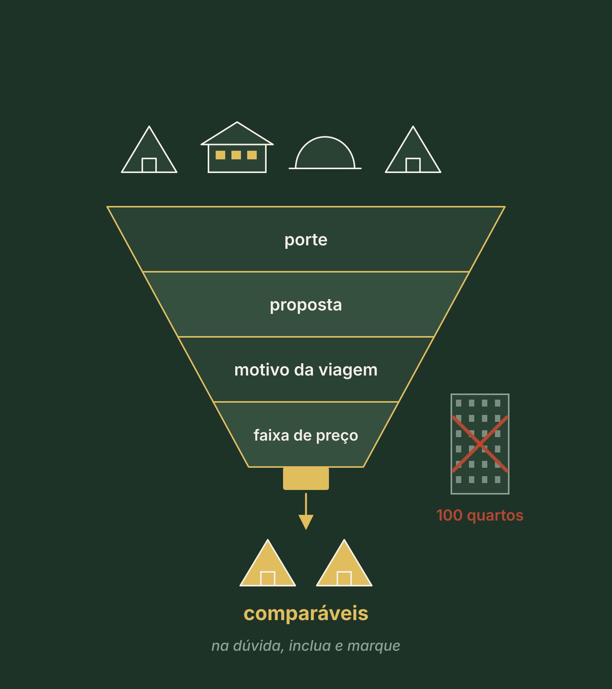
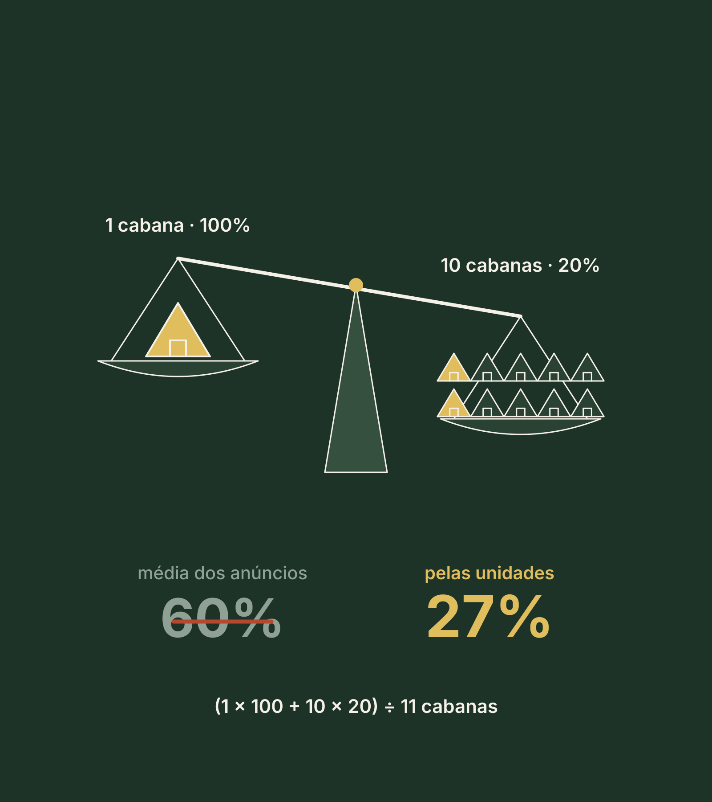
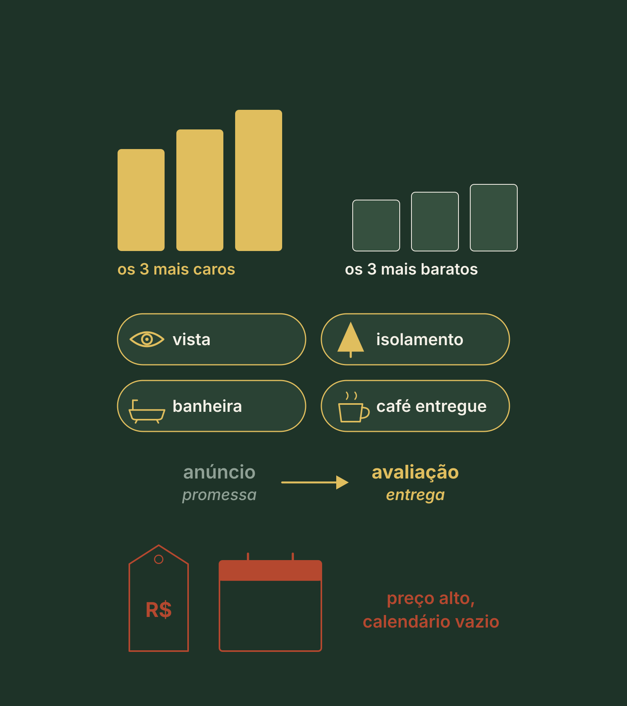

Quem paga, quanto e quando. Com dado, e não com palpite.
O que você já sabe
O terreno suporta. E agora?
A pergunta do Pilar 2
O que está no terreno tem demanda?
Este pilar em três respostas
O que, por quê e o que você leva
1
O que
Quem vende o mesmo que você, a diária de verdade, a curva do ano, quem paga e quantas unidades cabem.
2
Por quê
Quem constrói pelo que acha abre bonito e opera vazio. Depois da obra, já não dá para mudar tamanho nem preço.
3
Resultado
A página 2 do seu Dossiê: a Ficha do Mercado, com veredito.
Revisite · sem voltar às páginas
Três perguntas do Pilar 1
A matrícula diz 50.000 m². Quanto sobrou para usar no exemplo?
Clique para virar
Resposta
15.000 m², depois das subtrações. É essa área que entra nas contas.
Físico 12, água 10, experiência 7, mercado 5. Quantas unidades?
Clique para virar
Resposta
Cinco, sempre o menor. E esse cinco do mercado era estimativa. Hoje ele vira medida.
O terreno pesa 27% do investimento. Que pergunta ficou para hoje?
Clique para virar
Resposta
O produto sustenta uma diária acima da média da região?
Bloco 1
Quem vende o mesmo que você, e quanto o lugar já paga
CuriosidadeDez quilômetros de serra ou de estrada de terra podem ser quarenta minutos de carro.
ReflexãoSe o seu empreendimento não existisse, para onde o seu hóspede iria?
DicaA parte que é sua cabe numa tarde: celular, duas plataformas, um cronômetro e uma folha.
Onde quase todo mundo está
Um preço na cabeça e "aqui enche bastante"
O terreno está lido. Já tem um preço que você imagina cobrar.
E uma dúvida que ninguém fala em voz alta: e se ninguém vier na terça?
Não é falta de coragem. É falta de medida.
A troca de pergunta
Quem acha pergunta. Quem mede pergunta outra coisa.
Quem acha pergunta
Quem mede pergunta
Quanto eu vou cobrar?
Quanto este lugar já paga, e por quem?
Tem muita gente que vem aqui?
Quantas noites vendem, na média do ano?
Tem concorrente?
Para onde o meu hóspede iria, se eu não existisse?
Quantas unidades eu quero?
Quantas unidades o mercado aguenta?
Antes da resposta · o que você acha?
Uma pousada de 12 quartos a R$ 280 e um glamping de 6 unidades a R$ 1.200, na mesma rua. São comparáveis?
Comparável não é vizinho. É quem vende o mesmo motivo de viagem, na mesma faixa de preço. A concorrência acontece na cabeça do cliente, não no mapa.
Para entrar na sua lista
Os quatro filtros
Mesmo porte: poucas unidades com poucas unidades
Mesma proposta: cabana para casal com cabana para casal
Mesmo motivo de viagem: descanso, aventura, romance
Mesma faixa de preço: até 30% acima ou abaixo do que você imagina cobrar
Na dúvida, inclua, e marque se ele é muito ou pouco parecido.

O raio da pesquisa
Perto no mapa, longe no relógio
30 minutos de carro, cronometrados. Não em quilômetros.
O hóspede pensa em tempo, não em distância.
A busca de uma tarde · cinco passos
O que fazer, e por quê
Clique em cada passo para ver o que fazer e por quê.
Exemplo ilustrativo · resolvido passo a passo
A lista da Marina
Ela imagina R$ 500 a R$ 700. A busca: 500 × 0,7 e 700 × 1,3R$ 350 a R$ 910
Encontrados no raio e na faixa31 anúncios
Repetidos nas duas plataformasmenos 4
Vizinhos que não passam nos filtrosmenos 7
Comparáveis que ficam20, com 96 unidades
Sete deles vendem exatamente o mesmo que ela: cabana para casal, com vista e silêncio.
O que anotar de cada um
Seis itens. Os três últimos quase ninguém anota.
Nome e link
Para voltar depois.
Tipo e unidades
O porte.
Diária de semana e de fim de semana
Separadas: o preço real.
Quantas avaliações
Mostra quanto ele vende.
Data da primeira avaliação
Mais ou menos quando abriu.
A promessa em uma frase
O que ele diz que entrega.
O dono diz 80%. O calendário costuma contar outra história.
A diária não se escolhe. Se descobre.
Olhe do dia 30 ao dia 90
Por quê?
Por quê
Longe das reservas de última hora, que ainda vão mudar. E leia de novo 30 dias depois.
Separe sexta e sábado de domingo a quinta
Por quê?
Por quê
Eles vendem muito diferente. Uma média só esconde o meio de semana vazio, onde mora a oportunidade.
Dia ocupado nem sempre é reserva
Por quê?
Por quê
Pode ser o dono usando, manutenção ou estadia mínima.
Na hora da média
Pese pelas unidades, não pelos anúncios
1 cabana a 100% e 10 cabanas a 20%
Média dos dois anúncios60%
Pelas 11 cabanas: (1 × 100 + 10 × 20) ÷ 1127%

Exemplo ilustrativo · a semana típica de uma cabana
A conta da semana, noite por noite
Dias
Noites
Ocupação
Vendidas
Diária do meio
Entra
Sexta e sábado
2
78%
1,56
R$ 700
R$ 1.092
Domingo a quinta
5
26%
1,30
R$ 580
R$ 754
Semana
7
2,86
R$ 1.846
Ocupação · 2,86 ÷ 7
40,9%
Diária média · 1.846 ÷ 2,86
R$ 645
Por noite disponível · 1.846 ÷ 7
R$ 264
Ao vivo · equalize a semana
Exemplo ilustrativo · não é promessa
A diária média de verdade
Noites vendidas na semana
O que entra na semana
Ocupação da janela
Diária média de verdade
Por noite disponível
Média simples dos dois preços, o atalho errado
O fim de semana enche quantas vezes mais
Ajustado ao vivo
Quiz relâmpago
"A diária média é (580 + 700) ÷ 2 = R$ 640." Erro ou acerto?
O fim de semana vende três vezes mais noites. Aqui a diferença é pequena. Onde o fim de semana é muito mais caro, a média simples engana bastante.
A régua da faixa de preço
O seu destino paga por qualidade?
A diária mais cara do raio dividida pela mais barata: a amplitude.
Abaixo de 2 · briga de preço
2 a 3
Acima de 3 · paga pela diferença
Marina, no fim de semana · 1.150 ÷ 3803,0
Anúncio é promessa. Avaliação é entrega.

Antes do bloco 2 · 5 minutos
A sua busca, no papel
1Escreva o preço que você imagina, e a faixa da busca: × 0,7 e × 1,3.
2Escreva os seus quatro filtros: porte, proposta, motivo e preço.
3Abra uma plataforma e anote os três primeiros comparáveis, com a data da primeira avaliação.
4Onde não souber, escreva "não sei". Vira tarefa da semana.
5:00
A lista completa, de 10 a 20, é a vitória rápida deste pilar.
Bloco 2
Quando vem, quem paga e quantas cabem
CuriosidadeUsar o mês mais cheio deixa a conta 66% maior do que o ano entrega.
ReflexãoEm que mês o seu calendário ficaria mais vazio? E o que traria alguém naquela época?
DicaPeça à secretaria de turismo a série de visitantes, mês a mês. Nem toda cidade tem.
Quanto um lugar costuma encher na média do ano
A régua de ocupação
35% a 40% · só fins de semana
50% a 60% · com feriados e datas festivas
65% a 85% · só com procura extraordinária, comprovada
Use a ocupação e a diária médias do ano. Nunca o mês mais cheio.
A régua é referência para conferir a sua conta, não promessa de ocupação.
Exemplo ilustrativo · resolvido passo a passo
A curva da Marina
Alta, no inverno · 3 meses × 64192
Meses médios · 4 meses × 40160
Mês fraco · 5 meses × 22110
Soma 462 ÷ 12 meses38,5%
A média simples das três estações, (64 + 40 + 22) ÷ 3 = 42%, erraria para cima.
Ao vivo · equalize o ano
Exemplo ilustrativo · não é promessa
Média do ano
abaixo
35
50 a 60
65 a 85
Média simples das estações
Por cabana no ano, receita bruta
Com a alta o ano todo · a mais
Num mês fraco, por cabana
Ajustado ao vivo
O mês fraco existe e precisa caber
O mês fraco está vazio. O que vem primeiro?
Mês fraco pede produto, não desconto: um motivo para vir naquela época e um público que viaja no meio da semana. Quem vende a terça vende o que o vizinho não vende.
Ao vivo · coloque os seus números
Exemplo ilustrativo · receita bruta não é lucro
Unidades × ocupação × diária = receita bruta
Noites possíveis no ano
Noites vendidas
Receita bruta no ano
Por unidade, cerca de
abaixo
35
50 a 60
65 a 85
Com o mês cheio · a mais
Ajustado ao vivo
Exemplo ilustrativo · 100 avaliações de 5 comparáveis
"Casais e famílias" não é um público
Casais68
Famílias14
Amigos7
Sozinhos ou a trabalho4
Não dizem7
Em 11 das 100: "a casa só para nós". É o motivo da viagem falando.
Exemplo ilustrativo · origem do hóspede
De onde vem, em horas de estrada
Distância
Hóspedes
O que muda
Até 2 horas
58%
Vem no fim de semana e decide em cima da hora
De 2 a 5 horas
30%
Planeja mais e fica mais
Mais de 5 horas ou voo
12%
Fica mais noites
O que explica melhor o que o hóspede compra?
A mesma pessoa compra coisas diferentes quando vem comemorar, descansar ou trabalhar.
Escreva três linhas
Dois públicos, e quem fica de fora
1
Fim de semana
Por exemplo, o casal que vem de até duas horas para descansar.
2
Meio de semana
Quem pode vir de terça a quinta, e por quê. É ele que ajuda a encher as cinco noites.
3
Quem fica de fora
Por escrito. Quem tenta agradar todo mundo vira mais um.
E se a média é de duas noites: o que o hóspede faz no segundo dia?
Absorção
Não é quantas você quer. É quantas o destino compra.
Quantas unidades novas o destino consegue encher, sem você tirar hóspede de ninguém.
A conta em quatro passos
De onde vêm as noites novas
Clique em cada passo: a conta e o porquê.
Exemplo ilustrativo · resolvido passo a passo
As noites que sobram
Os 96 comparáveis vendem hoje · 96 × 365 × 38%13.315 noites
A procura cresce 7% ao ano e ela abre em 3 anos · mais 22,5%mais 2.996
18 unidades em obra ou licença · 18 × 365 × 38%menos 2.497
Sobra para quem entra499 noites
Cada cabana precisa · 365 × 38%138,7 noites
499 ÷ 138,7 = 3,6. Três pedem 416 noites: cabem. Quatro pedem 555: não cabem.
Ao vivo · quantas o destino compra
Exemplo ilustrativo
Ocupação do ano usada, da curva
Vendem hoje, já têm dono
Procura nova até abrir
Levam as que estão em obra
Sobra / cada unidade precisa /
Cabem agora
Ajustado ao vivo
Toda página do Dossiê termina com uma palavra
O veredito, e o porquê de cada um
Clique em cada veredito: quando e por quê.
E o critério para parar, escrito antes, para você não decidir pelo entusiasmo.
Exemplo ilustrativo
A Marina ajusta
Abre com 3 cabanas e desenha a infraestrutura para 5.
Condição: entregar o que o topo entrega. Vista, isolamento e um motivo para vir no meio da semana.
E os 27%? Com a diária média da região, não. O que dá chance é o topo da faixa.
Critério para parar: se a sobra não couber nem as 416 noites de 3 cabanas, ela pausa e revê público e produto.
Ao vivo · a Ficha do Mercado em uma tela
Exemplo ilustrativo · não é promessa
Ajustado
Diária média
Ocupação média do ano
abaixo
35
50 a 60
65 a 85
Receita bruta por unidade no ano
Num mês fraco, por unidade
Noites que sobram no destino
Cabem agora
Receita bruta das que cabem
Antes do Faça agora · 5 minutos
O seu compromisso de 7 dias
1Ação: ler cinco calendários, do dia 30 ao 90, com sexta e sábado separados, e fazer a conta da semana.
2Responsável e prazo: você, com o celular, em sete dias, antes do Pilar 3.
3Evidência: a folha com as noites ocupadas e os três números: ocupação, diária média e amplitude.
5:00
Se sobrar tempo: 100 avaliações, a série de visitantes e os alvarás.
Revisão · responda de cabeça
Três meses a 64%, quatro a 40% e cinco a 22%. Qual a média do ano?
(3 × 64 + 4 × 40 + 5 × 22) ÷ 12 = 462 ÷ 12 = 38,5%. Os 40,9% são da janela da semana, não do ano.
Revisão · responda de cabeça
Ninguém hospeda na minha região. É oportunidade?
A ausência de concorrentes pode significar ausência de procura. Antes de comemorar, descubra por que ninguém está lá: onde dorme quem visita, e por que os projetos que tentaram pararam.
Faça agora · a página 2 do seu Dossiê
A sua Ficha do Mercado
1Responda. Uma pergunta por tela: comparáveis, a semana, a amplitude, a curva do ano, o que cresce e o que está em obra. Onde não souber, "não sei" vira tarefa.
2Leia as contas. A diária média, a média do ano na régua, quantas cabem e o veredito sugerido.
3Baixe o seu PDF e guarde na pasta "Meu Dossiê".
10:00
Na área de membros: Faça agora · A sua Ficha do Mercado
O Pilar 2 em uma tela
O que ficou
Comparável não é vizinho: quatro filtros e 30 minutos de carro.
A diária não se escolhe, se descobre: o que entra dividido pelas noites vendidas.
Média do ano, nunca o mês mais cheio. A régua confere, não promete.
Mês fraco pede produto, não desconto.
"Casais e famílias" não é um público: o motivo da viagem explica mais.
Não é quantas você quer: é quantas o destino compra.
Próximo · Pilar 3
Produto e tipologias
O produto que o topo da faixa paga: o que entregar, para quem, e um motivo para vir no meio da semana. Mercado medido troca opinião por número, e um projeto assim é o que um sócio, um banco ou a Zion conseguem avaliar. A Zion avalia cada caso.
Conteúdo educacional. A Marina é um exemplo ilustrativo e os números são ilustrativos; os da sua região precisam ser medidos por você. Ferramentas de dados de mercado trabalham com estimativas: confira alguns comparáveis à mão. Não é oferta de investimento, e não é promessa de renda, lucro, retorno, ocupação, crédito ou sociedade.